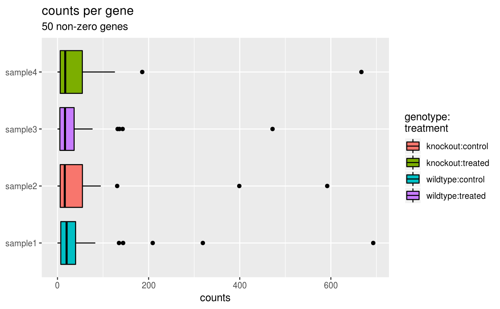
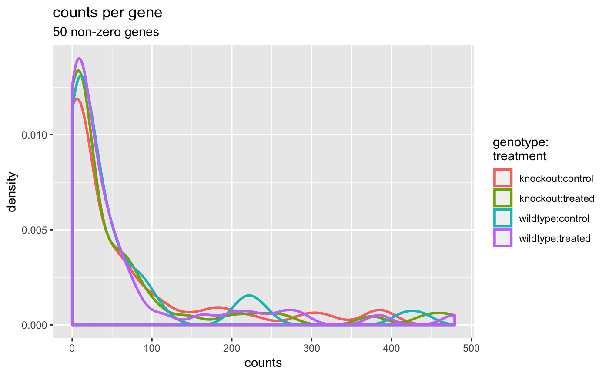
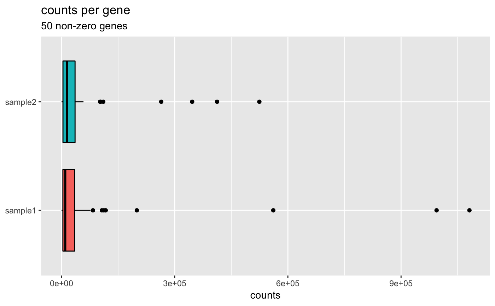
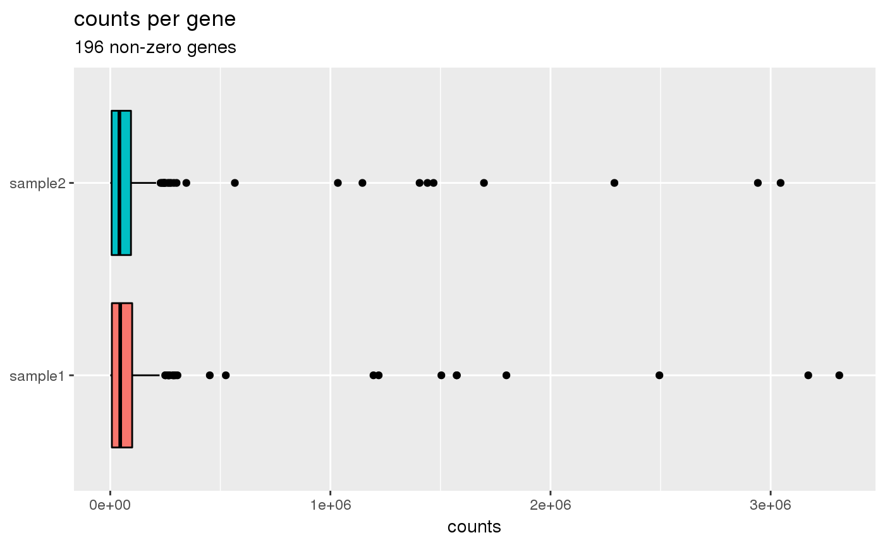

Generally, we expect similar count spreads for all genes between samples unless the library sizes or total RNA expression are different.
plotCountsPerGene(object, ...) # S4 method for SummarizedExperiment plotCountsPerGene(object, assay = 1L, interestingGroups = NULL, geom = c("boxplot", "density", "violin"), trans = c("identity", "log2", "log10"), color = getOption("basejump.discrete.color", NULL), fill = getOption("basejump.discrete.fill", NULL), flip = getOption("basejump.flip", TRUE), countsAxisLabel = "counts", title = "counts per gene") # S4 method for SingleCellExperiment plotCountsPerGene(object, assay = 1L, interestingGroups = NULL, geom = c("boxplot", "density", "violin"), trans = c("identity", "log2", "log10"), color = getOption("basejump.discrete.color", NULL), fill = getOption("basejump.discrete.fill", NULL), flip = getOption("basejump.flip", TRUE), countsAxisLabel = "counts", title = "counts per gene")
| object | Object. |
|---|---|
| ... | Additional arguments. |
| assay |
|
| interestingGroups |
|
| geom |
|
| trans |
|
| color |
|
| fill |
|
| flip |
|
| countsAxisLabel |
|
| title |
|
ggplot.
Other Plots: plotCountsPerBiotype,
plotGenderMarkers,
plotGenesDetected, plotGene,
plotHeatmap, plotQC,
plotTotalCounts,
plotZerosVsDepth
data(rse_small, sce_small) ## SummarizedExperiment ==== plotCountsPerGene(rse_small, geom = "density")#>plotCountsPerGene(rse_small, geom = "boxplot")#>plotCountsPerGene(rse_small, geom = "violin")#>## SingleCellExperiment ==== plotCountsPerGene(sce_small)#>#>